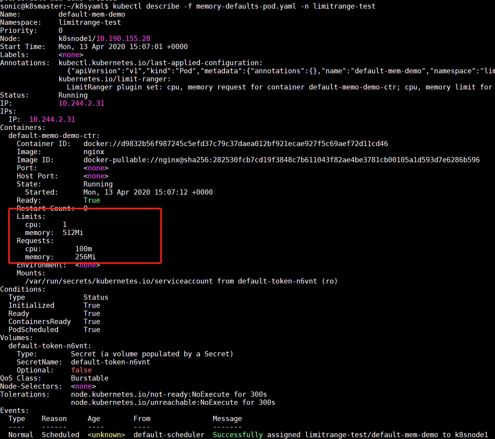
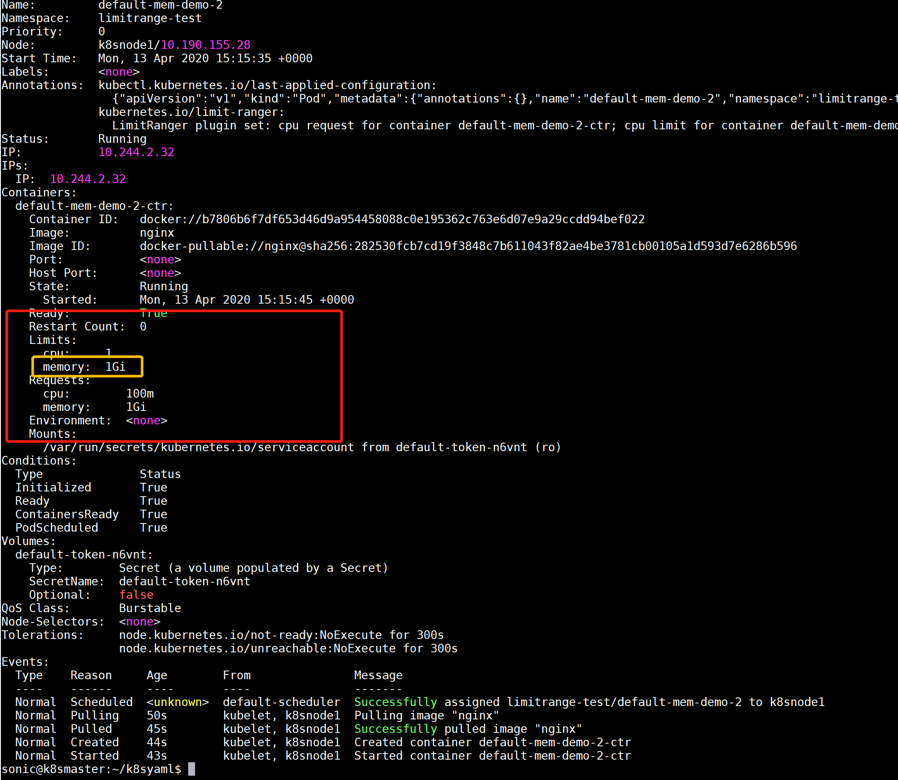

Pod作为Kubernetes上的基本的执行单元，在运行的时候可以设置Memory和CPU资源下限和上限。这篇学习笔记是记录如何进行这方面的设置，以及一些相关的概念。
Limit Ranges
默认情况下，Pod/Container是没有compute resources的限制的。如果想要为某个namespace下的container增加一个默认的限制，就需要定义一个Limit Ranges.
- Limit Ranges会应用到一个namespace下所有的Pod/Container，会使其资源限制在request和limit之间。
- Limit Ranges强制PersistentVolumeClaim (PVC)的最大最小值
- Limit Ranges设置的是默认值。如果Container要修改这些限制，就要overwrite掉这个值。
修改默认的Limit Ranges
首先看看一个默认情况下Pod在运行时候的状态。默认情况下是没有CPU 和 Memory的限制。
1 | sonic@k8smaster:~/k8syaml$ kubectl describe po default-mem-demo -n limitrange-test |
下面是定义一个默认的Limit Ranges, 并且将这个Limit Ranges应用到这个namespace下。再看看会发生什么变化。
这里的Limit Range定义了最低memory为256M，CPU为单核的10%。上限为Memory = 512MB, CPU为单核的100%。
1 | apiVersion: v1 |
1 | sonic@k8smaster:~/k8syaml$ kubectl apply -f memory-defaults.yaml -n limitrange-test |
接下来重新创建刚才的Pod, 情况就会发生变化。可以看到这个Pod已经出现了Limit和Request的设置。

Overwrite Limit Ranges
同一个namespace下如果已经有了Limit Ranges, 那么创建的Pod下面没有针对Limit和Request的定义时就会采用Limit Ranges的默认值。Pod的定义里面可以显示的overwrite。例如下面的例子。将Limits提升到了1GB.
1 | apiVersion: v1 |
这个时候发现Pod的limit.memory被提升到了1GB.其他值并没有变化。

如果单独修改Requests,并且在不超过limit的情况下，request也会做相应的调整。
但是如果requests超过limit的限制，则会出现一个错误。例如下面的实例中，设定requests为1GB，好过了limit:512M的限制。那么会出现错 Invalid value: "1Gi": must be less than or equal to memory limit.
1 | apiVersion: v1 |
1 | sonic@k8smaster:~/k8syaml$ kubectl create -f memory-defaults-pod-3.yaml -n limitrange-test |
Requests vs. Limits
资源的Requests和Limits这两个属性分别代表着不同的意思。
- Requests: Pod或Container使用的最小资源需求。这个是作为Container调度资源分配的判断依据。只有当node上可分配资源量>=Requests的要求时才允许将Container调度到该节点。如果分配资源量 < Requests的要求，创建可能失败，或者可能被驱逐。
- Limits: Pod或Container使用的最大资源需求。
Requests的意义在于确保Pod/Container的最小工作资源。假设Node的资源非常的丰富，无论何时都可以 保证memory和CPU的使用，对于Pod/Container来说非常富足。这种情况下，Requests是没有太多的意义的。但是反过来，如果memory/CPU的情况非常吃紧。要让Pod/Container能够良好的工作，必须要保证memory/CPU维持在某个合理值之上，这个时候可以通过设置Requests来达到要求。
Limits的意义在于确保Pod/Container使用的资源memory/CPU维持在给定值之下。将Node上的资源留给其他的Node来使用，确保其他Pod/Container的正常运行。如果超过Limit，将有可能遇到被中止、节流、驱逐等风险。
Min && Max
在Limit Ranges中还可用设置Memory和CPU的最大值和最小值。在创建好Limit Ranges中的Min & Max之后，创建容器时Kubernetes 就会执行下面的步骤：
- 如果 Container 未指定自己的内存请求和限制，将为它指定默认的Memory/CPU的Requests和Limits。
- 验证 Container 的Memory/CPU Request是否 >= Min。
- 验证 Container 的Memory/CPU Limit是否 <= Max。
Memory
内存的Limits和Requests以bytes为单位。可以使用以下后缀之一作为平均整数或定点整数表示内存：E，P，T，G，M，K。您还可以使用两个字母的等效的幂数：Ei，Pi，Ti ，Gi，Mi，Ki。例如，1G = 1,000,000,000 或者 1Gi = 1GB = 1024 * 1024 * 1024.
Kubernetes scheduler会选择一个合适Node来运行这个Pod. 当Requests必须要低于Limits，否则显示下面错误：
1 | sonic@k8smaster:~/k8syaml$ kubectl create -f memory-defaults-pod-4.yaml -n limitrange-test |
Requests也不能设置太高。如果没有任何一个node达到资源要求，Pod的创建将会发生问题。比如下面这个例子，将Requests设定在32GB，没有任何一个node有这么高的可用memory, 出现下面的错误0/3 nodes are available: 3 Insufficient memory.。
1 | sonic@k8smaster:~/k8syaml$ kubectl describe -f memory-defaults-pod-5.yaml -n limitrange-test |
当Pod使用的memory超过上限的时候，Pod就会有被terminated的风险。会出现如下的错误exitCode:137.
1 | lastState: |
CPU
这里设置的CPU等同于Node在操作系统层面所能提供的一个CPU的资源, 相当于 1 vCPU/Core。
CPU的Requests和Limits可以设定为部分CPU。例如0.1这样的情况。这里的小数部分是按照毫秒(millisecond)来进行计算。例如，0.1代表着 0.1 * 1000 ms = 100 ms. 以1s的CPU时间为例，将会分配到 100ms, 也就是单个CPU的10%的CPU时间。这个是一开始让我比较疑惑的地方。
例如下面的设置，代表着最大可用使用2个CPU。能运行2个CPU的使用率达到100%。如果这个node上有4个CPU的话，意味着最高能使用node上50%的CPU Usage.
1 | limits: |
例如下面的设置，代表着最大可用1个CPU的10%的使用率。如果这个node上有4个CPU的话，意味着更低的CPU Usage.
1 | limits: |
由于K8S上CPU资源是可用压缩的。当Pod/Container的CPU使用率超过了限制，POD/Container将会被节流(throttling)。而不是像memory那样被强制关闭。这一点跟memory的区别还是比较大的。
总结
- 默认情况下，Pod/Container是没有使用资源限制的，Memory,CPU随便用。
- 通过设定LimitRange能够在指定的namespace下设定资源限制。
- Limits用来设置上限，Requets用来指定下限。
- 达到Memory上限，Pod会被关闭。达到CPU上限，Pod会被节流。